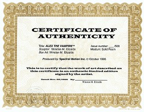

Click picture for a larger view. |
Spectral Motion Inc. The Makers Of Netherlord
|
|
Fill out our order form and make check or money order for $99.95 payable to Spectral Motion Inc. and send to:
For Visa or Mastercard orders:
For questions or comments:
® Alex The Vampire is a registered trademark of Spectral Motion Incorporated. All rights reserved. |
 Remove & Sand Excess Material From All Parts
Remove & Sand Excess Material From All Parts
Resin kits are shipped with excess material as a result of the casting process. This material must be
carefully cut away with a hobby knife or saw and sanded with a rotary sanding tool such as a
"Dremel" Moto tool. This step should be accomplished while using a dust mask in a well ventilated
area.
Wash, Rinse & Dry All Parts
Using dish washing detergent or other mild soap, thoroughly wash all parts to remove separating
agent. Rinse and allow to air dry. A blow dryer may be used to speed the process. This step will
ensure good paint adhesion.
 Assemble
Assemble
Carefully pre-fit all parts, sanding as necessary, to provide a good fit. Refer to illustration
for placement. Glue the parts together with a cyanoacrylate adhesive such as "Crazy
Glue" or other C.A. adhesive (available at hobby stores). Pinning together with 1/8" brass rod
before gluing is recommended but entirely optional. Once your model is assembled you can fill the
gaps with epoxy putty (also available at hobby stores). Sand putty and prep for painting
Note: When gluing in teeth & tongue, insert lower teeth first, then glue in tongue and glue the
upper teeth last.


 Paint
Paint
Now you can paint your kit to your liking. The final look of your kit is entirely up to you so use
your imagination! Detailed instructions on painting can be obtained from many sources such as
model kit magazines or courses on video tape. Ask your model kit dealer for information if you
need to know more.
Attaching Hair (optional)
Included with your kit is an 8 inch x 8 inch square of "Real" Horror Hair to be used as
Alex's hair ONCE YOU ARE FINISHED PAINTING HIM. Before attaching
hair, with a pencil lightly draw a hairline along the front of the head. Next comb a
small section of hair with a fine tooth comb. Hold this section between your index
and middle finger and cut with a sharp pair of scissors. You must cut the section
you have combed longer than you want the actual length to be. Repeat this process
until you have several "tufts" of hair. Set these aside for later.
Using an adhesive such as Pros-Aide (available at beauty supply stores) begin at the back of the head at the lowest point of the hairline and paint a line at that point. Allow adhesive to become tacky. Attach hair along the adhesive line with the cut end at the adhesive. Above this paint a second line and attach more hair. Continue this process until you reach the top of the head. It is up to you how thick you want the hair so remember this when attaching. When you reach the top of the head the hair can be attached pointing directly up then cut and style to your liking.
If you wish you can dye the hair before cutting or airbrush color on after attaching. Use RIT or comparable dye. Follow manufacturer's instructions on box. For airbrushing use acrylic paint. If you would prefer to use a different type of hair, some suggestions are mohair, angora, human or synthetic hair available where wigs are sold. For more detailed instructions on laying hair call Spectral Motion Inc. at (818) 794-2827 or write us at P.O. Box 41381 Pasadena, CA 91114. We would be happy to help you in any way we can.
 |
 |
Copyright © 1994-1997 Firefly Design.